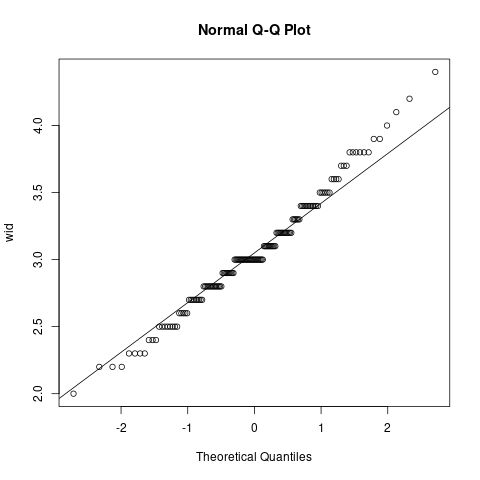

Table of Contents
1. R言語 分散分析ANOVAで多群の比較を行う【初心者向け】
1.1. 分散分析（ANOVA）の手順
分散分析には、データの正規性や群間の分散の等質性が前提条件にあったり、分散分析後の事後テストがあったりなど、統計学に詳しくない人にとって、検定が正しく行われているのか判断が難しいことが多いです。
分散分析の実行方法では、それぞれの手順の具体例を与えて、プロットを交えながら、それぞれの検定の役割をみていきます。
分散分析の流れを次の図とステップに示します。
anova概要
分散分析は正規性の検定から始まります。
正規性がない場合はノンパラメトリック手法で行います（ノンパラメト リック手法はこの記事では触れない）。
次に群間（グループ間）の分散等質性の検定を行う。
比較したいグループ間の分散が同等であることを検定します。この条件 を満たしていれば次の分散分析が適用できます。分散の等質性が満たさ れない場合は、Welchの分散分析を適用します（分散が異なる場合はこ こでは触れない）。
- 分散分析（ANOVA）を行い、群間に差があるかを検定します。ここで、 有意な因子（グループを構成するもの、例：品種）が存在するならば、 次の事後テストを行います。有意な因子がない場合は、ここで検定を終 了し、グループ間に差異はないという結論を得ます。
- 最後に、有意であった因子に対して事後テストを行います。事後テスト を行うことでどの群間に差異があるのかを詳しく見ていきます。例えば、 品種A、B、Cに分散分析を行ったとき、分散分析では「品種のどれかの 間には違いがある」ということしか分かりません。事後テストでは品種 A、B、Cのうちどのペア（例AとB間、AとC間）に違いがあるのかを検証 することができます。
分散分析の流れは以上になります。
1.2. anova関連パッケージのインストール
分散分析（ANOVA）やその検定のプロットを行う前提として各種パッケージをインストールする必要があります。
次を実行しパッケージのインストールを行い、ライブラリへの追加を行います。
install.packages("ggpubr") install.packages("rstatix") install.packages("ggplot2") install.packages("gridExtra") library(ggpubr) library(rstatix) library(ggplot2) library(gridExtra)
ggpubrは分散分析のプロットに用います。
rstatixは分散分析や事後テストの検定を行うため、またその検定結果をプロット上に表示させるために用います。
1.3. iris データセット
これらのパッケージを用いて、次のirisのデータセットを例に分散分析を行っていきます。
class(iris) head(iris)
[1] "data.frame" Sepal.Length Sepal.Width Petal.Length Petal.Width Species 1 5.1 3.5 1.4 0.2 setosa 2 4.9 3.0 1.4 0.2 setosa 3 4.7 3.2 1.3 0.2 setosa 4 4.6 3.1 1.5 0.2 setosa 5 5.0 3.6 1.4 0.2 setosa 6 5.4 3.9 1.7 0.4 setosa
1.4. 正規性の検定
まず分散分析の前提として、正規性の検定を行います。
今回irisのSepal.WidthのデータをSpeciesという因子に関して分散分析をします。
Sepal.Widthが正規性を持たない（母集団が正規分布でない）場合、分散分析を適用することができません。
そこでここで紹介する正規性の検定が必須となります。
統計ソフトRで正規分布の確認のため正規確率プロットを描くには？ - 統計ER
- 図で正規分布のチェック
- qqnorm()を使う。
- 正規確率プロットを描く。x軸が正規分布の論理的な分位数、y軸が実測値の分位数。
- 対角線上にまっすぐに、プロットがならべば、正規分布していると判断できる。
次のコードを実行することで、正規性に関するプロット及び正規性の検定を行 うことができます。
#正規性の確認 qqnorm(iris$Sepal.Width ,ylab = "wid") qqline(iris$Sepal.Width) shapiro_test <- shapiro.test(t(iris$Sepal.Width))

- y=xの対角線上にデータのプロットが集中しているほど、データが正規性を持つことがいえます。
- 上の場合、Sepal.Widthは正規性をもっていることがうかがえます。
プロットだけでは判断できない場合も、5行目を実行することで、正規性の 検定であるシャピロ・ウィルク検定を行うことができます。
p値が0.05より大きい場合は正規性をもつことがいえて、次のステップに進 むことができます。
ここで、p値が0.05以下の場合は、クリスカルウォリス検定などの分散分析 のノンパラメトリック手法を検討する必要があります。
実際に次を実行すると、Sepal.Widthに関するシャピロ・ウィルク検定のp値は0.1012>0.05であり、正規性があることが分かりました。 a